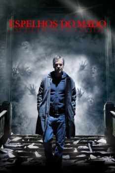

Espelhos do medo (2008)


There is evil...On the other side.

Avaliação (TMDb):


6.2/10 (1.3K votos)
Avaliação (Usuário):
Outro Título:Mirrors
País:United States, 110 minutos
Idiomas falados:Inglês, Espanhol, Português
Gênero(s):Terror, Mistério, Suspense, Drama
Diretor(s):Alexandre Aja
Codec:MPEG-2 (DVD)
Número: 1377
Sinopse:
Do mesmo diretor de "Viagem Maldita", ESPELHOS DO MEDO é a história aterrorizante de um atormentado ex-policial que precisa salvar a família de um mal inominável que está usando espelhos como entrada para sua casa.
Elenco:
Kiefer Sutherland, Paula Patton, Ioana Abur, Erica Gluck, Amy Smart, Mary Beth Peil, John Shrapnel, Jason Flemyng, Tim Ahern, Julian Glover
Tipo de mídia: DVD5,
Legendas: Inglês, Espanhol, Português
Alugado: Não
Tela: 2.35:1